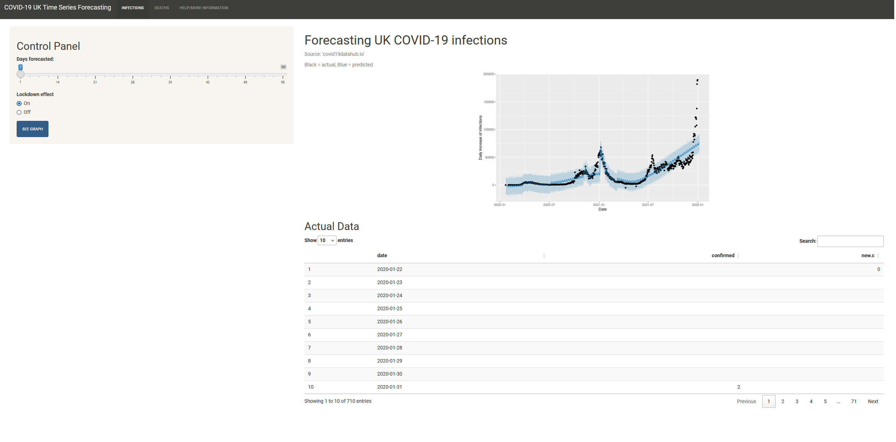
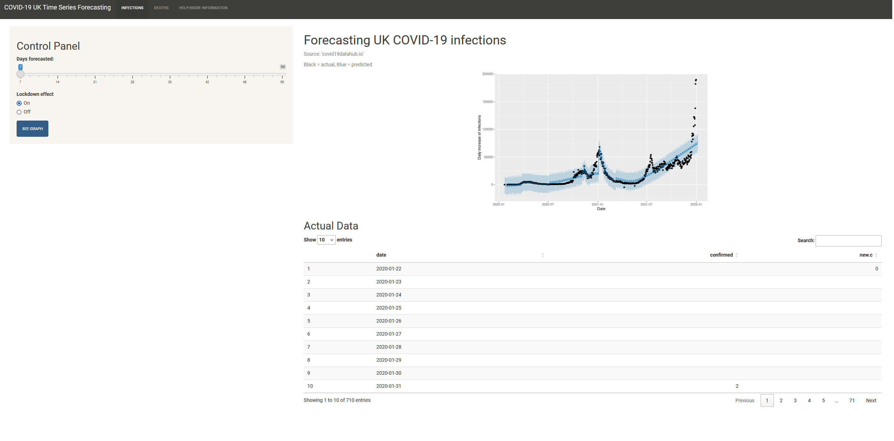

This project demonstrates the process of cleaning and analyzing a simulated dataset of vessel installation statuses in the FleetManager system. This data is similar to what I currently handle within my current role as a Deployment Manager for OneOcean. The primary goal is to ensure data integrity by handling missing values, removing duplicates, and standardizing data formats, making the data ready for further analysis and decision-making.
 

This interactive web application forecasts daily increases in COVID-19 infections and deaths in the UK, using historical data from 2020 to 2021. Developed as part of my final year dissertation at Brunel University London, the app leverages the powerful 'prophet' forecasting model to predict future trends, allowing users to explore the impact of UK lockdowns on COVID-19 cases and deaths. The application provides real-time data visualization with options to adjust forecasting parameters and view actual data comparisons. Click on the image to view the web application!

In this project, I analyzed the 2023 NBA Playoff data using SQL and Power BI to uncover insights into player and team performance. The data, sourced from Kaggle, was processed and split into separate reports for player and team statistics. Key aspects of the analysis include identifying top scorers, evaluating player efficiency, and understanding team contributions. The insights were then visualized through interactive Power BI dashboards, providing an intuitive overview of the findings. As a lifelong Denver Nuggets (2023 NBA Champions) fan, this project holds personal significance, allowing me to combine my passion for basketball with data analysis.